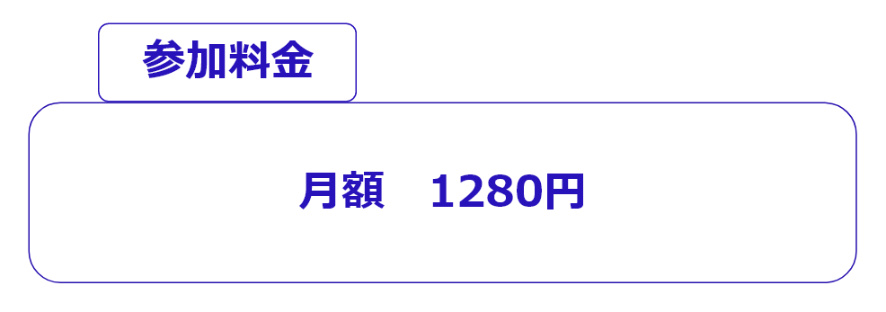

新たな価値観を見つけ、
新たな自分を見つけるコミュニティ
ストーリー
「新たな価値観を見つけ、新たな自分を見つけるコミュニテイ」にしたいという思いで立ち上げました。
私自身人材業界とコーチという仕事を通して、沢山の方々にお会いさせていただきました。
その中でも多かったのは、目の前の仕事に没頭していて、この先どうしていきたいのかを、考える時間を作れていない現状です。
そして自分自身も、本当に１年前までそうだったということです。
今の仕事が悪いとか、自分で事業をしたほうがいいというものではないです。
自分の人生をどうしたいのかを考えることで、すべてがうまくいきやすくなるよねって話です。
ただ自分だけで自分のことを、考え続けるのは難しいかと思います。
就活していた時代に、自己分析を長い時間かけてやっても、友人と話していた何気ない会話に
気付かされることがあるように、
自分で自分をわかることは難しいと思います。
ただ意図的に気づきを与えてもらうことなど、多くないと思います。
大事なのは、自分の考えが「当たり前」という価値観の中では、本当の自分に気づけないということです。
そのためには違う価値観に触れていき、新たな価値観を受け入れながら、自身の価値観に気づくことが重要です。
このコミュニティでは、「自分では気づけない自分」 に気づくための語り合い をしていきます。
奥津暢紀
「語り場」
毎回その時のテーマに沿って、語り合いをする形になります。
例：人生で一番の挫折経験とは。あなたのこだわりポイントとは。など
参加者は必ず発表者と視聴者に分かれます。
①発表者が３分でテーマについて話す
②視聴者が発表者に対して質問をし、発表者に答えてもらう。
③発表者が変わる。これを全員が発表者を終えるまで続けます。

-参加方法-
１，LINE登録（今すぐ参加するをクリック）
↓
２，語り場参加希望とテキストで送る
＊希望者には説明会を開催します
-よくあるご質問-
HP上部にある公式ラインを追加後、カタリバ入会希望と入力してください。 加入されてからイメージと相違がないよう、無料説明会は参加するために必須となります。
→全く問題ないです。 むしろゆるりと開催しているので、参加タイミングはおまかせします。
18歳〜30歳の学生・社会人が多いです。男女の割合は男性7女性3くらいです。
Slackという使用方法が簡単なチャットアプリを利用します。 利用したことが無い方には使い方をレクチャーしますのでご安心下さい。
カード引き落としとなります。Squareという操作が簡単なアプリを利用しています。 月の半ばに参加しても次回の支払いは次月の月初ではなく、ちょうど1ヶ月後になります。 なので、いつ参加されても損はしません。
参加後に招待するコミュニティ専用のチャット内で運営者に直接ご連絡下さい。連絡後1週間以内に退会の手続きを行います。